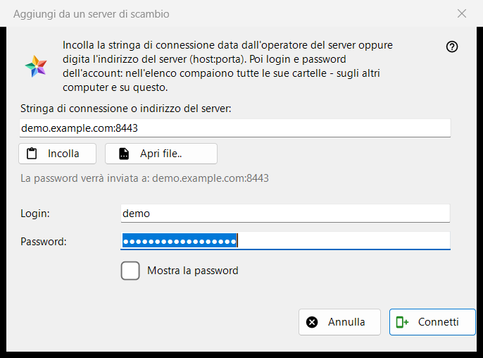
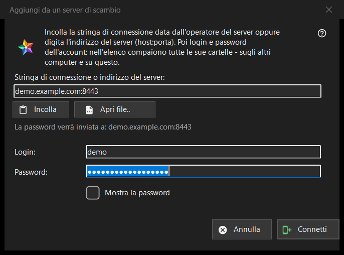

Aggiungi da un server di scambio
Scopo
Collega questo computer a un account su un server di scambio, così le cartelle di tutti i dispositivi di quell'account compaiono nell'elenco delle risorse. Si apre dal pulsante «Aggiungi da un server di scambio..» nella sezione «I miei dispositivi» dell'elenco delle risorse, e quando trascini una stringa o un file di connessione sul programma o ne digiti una nel campo della cartella.


In questo ordine
- Incolla la stringa di connessione dell'operatore del server, digita l'indirizzo come host:porta oppure premi «Apri file..».
- Controlla la riga «La password verrà inviata a: ..»: quell'indirizzo è l'unico posto in cui va la password.
- Inserisci il login e la password.
- Premi «Connetti».
- Se il programma chiede del certificato del server, confronta l'impronta con quella indicata dall'operatore.
Gli elementi
Stringa di connessione o indirizzo
Il primo campo accetta una stringa di connessione (inizia con FMSEXCH1:) o un indirizzo come host:porta. «Incolla» lo riempie dagli appunti, da un testo o da un'immagine di un codice QR, e «Apri file..» legge un file .fmsexch o un'immagine QR. Incollare compila soltanto il modulo: non viene inviato nulla finché non premi «Connetti». La riga sotto il campo mostra dove andrà la password; un indirizzo web, un codice di cartella o una stringa danneggiata vengono rifiutati lì in parole semplici.
Login e password
«Login:» viene compilato dalla stringa quando ne contiene uno. «Password:» è nascosta; «Mostra la password» la rivela. Quando premi «Connetti», i campi della password vengono svuotati prima che il primo byte lasci il computer. La riga di stato mostra l'avanzamento e, in caso di errore, il motivo: un login o una password che non andavano, troppi tentativi, un server che non risponde.
Una stringa di invito
Una stringa che è un invito nomina già il server e porta la finestra alla creazione di un account: compaiono «Password di nuovo:» e una nota sulla regola della password (almeno 10 caratteri, con una lettera latina maiuscola, una minuscola e una cifra), e il pulsante diventa «Crea l'account». L'ultima parola sulla regola spetta al server.
Il certificato del server
Se il certificato è sconosciuto, una domanda ne mostra l'impronta e chiede se fidarsi del server e ricordarlo; la risposta predefinita è No. Se la stringa indica un'impronta e il server ne presenta un'altra, vengono mostrate entrambe, non viene ricordato nulla e non viene inviata nessuna password.
Accedere di nuovo
Se la finestra è aperta per una voce di server esistente per accedere di nuovo, mostra l'indirizzo e il login in sola lettura, e l'impronta che quella voce ricorda è l'ancora di fiducia.